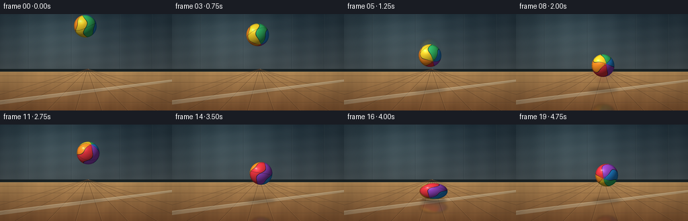
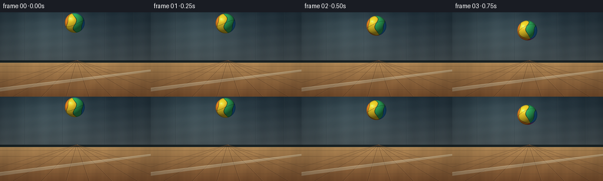
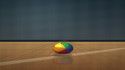

CODING AGENTS AS PIXEL WORLD MODELS
traex/GPT-5.6-Sol · mechanics_0042
点击播放 · 原生 RGB 像素
逐轮保存的候选
回放视频、检查图与代码变化。
每份候选均可单独播放。实际图片检查记录在下方工具轨迹中。
候选 01播放与检查图
点击播放 · 原生 RGB 像素


展开代码变化
--- 上一保存版本
+++ 本次保存版本
@@ -0,0 +1,226 @@
+from pathlib import Path
+import math
+import numpy as np
+from PIL import Image, ImageDraw, ImageFilter
+import artifact_io
+
+# Procedural, fixed-camera studio animation of a soft rubber ball bouncing on a hard floor.
+W, H, N = 256, 144, 20
+S = 4
+SW, SH = W*S, H*S
+FLOOR_Y = 111.5
+rng = np.random.default_rng(42)
+
+# Hand-tuned samples of a damped ballistic trajectory. The sparse 4 fps sampling still
+# preserves a readable anticipation, impact squash, rebound, and second impact.
+ball_y = np.array([18, 19, 23, 31, 44, 62, 83, 99.5,
+ 77, 59, 47, 42.5, 46, 57, 73, 91, 99.5, 82, 73.5, 75.5], dtype=float)
+ball_x = np.array([127.0,127.1,127.2,127.4,127.7,128.0,128.4,129.0,
+ 129.6,130.2,130.8,131.3,131.7,132.1,132.5,132.9,133.2,133.8,134.4,135.0])
+impact_frames = {7, 16}
+
+
+def make_background():
+ yy, xx = np.mgrid[0:SH, 0:SW]
+ x = xx / S
+ y = yy / S
+ arr = np.zeros((SH, SW, 3), dtype=np.float32)
+ horizon = 84.0
+ wall = y < horizon
+
+ # Cool blue-gray concrete wall with a broad window-like pool of daylight.
+ t = np.clip(y / horizon, 0, 1)
+ wall_top = np.array([35, 53, 64.], dtype=float)
+ wall_bottom = np.array([65, 75, 79.], dtype=float)
+ for c in range(3):
+ arr[..., c] = wall_top[c]*(1-t) + wall_bottom[c]*t
+ glow = np.exp(-(((x-79)/73)**2 + ((y-27)/52)**2))
+ arr += glow[..., None] * np.array([20, 24, 23.])
+ # Subtle concrete texture is static, preventing temporal noise.
+ texture = (2.1*np.sin(x*.19) + 1.3*np.sin(y*.33+x*.027) +
+ rng.normal(0, .65, (SH,SW)))
+ arr[wall] += texture[wall, None]
+
+ # Warm polished hardwood floor, strongly distinguishing the hard contact plane.
+ ft = np.clip((y-horizon)/(H-horizon), 0, 1)
+ floor_near = np.array([126, 82, 47.], dtype=float)
+ floor_far = np.array([180, 139, 87.], dtype=float)
+ floor_col = floor_far[None,None,:]*(1-ft[...,None]) + floor_near[None,None,:]*ft[...,None]
+ wood = (3.0*np.sin(x*.105 + y*.09) + 1.8*np.sin(x*.32+y*.018) +
+ .9*np.sin(x*.91))
+ floor_col += wood[...,None] * np.array([1.0,.72,.42])[None,None,:]
+ arr[~wall] = floor_col[~wall]
+
+ im = Image.fromarray(np.uint8(np.clip(arr, 0, 255)), 'RGB')
+ d = ImageDraw.Draw(im, 'RGBA')
+ sc = S
+ # Concrete panel joints and a sturdy dark baseboard.
+ for vx in (42, 106, 178, 226):
+ d.line((vx*sc, 0, vx*sc, 84*sc), fill=(15,25,31,45), width=1*sc)
+ d.line(((vx+0.5)*sc, 0, (vx+0.5)*sc, 84*sc), fill=(145,160,163,18), width=1*sc)
+ d.rectangle((0,82*sc,SW,86*sc), fill=(25,34,36,255))
+ d.line((0,86*sc,SW,86*sc), fill=(220,187,130,80), width=1*sc)
+
+ # Perspective plank joints converge at a vanishing point just above the floor.
+ vp = (130*sc, 82*sc)
+ for xb in (-80,-28,22,70,112,151,190,234,284,338):
+ d.line((vp[0],vp[1],xb*sc,SH), fill=(59,36,24,75), width=1*sc)
+ d.line((vp[0]+sc,vp[1],(xb+1)*sc,SH), fill=(235,189,118,25), width=1*sc)
+ # Cross seams recede toward the horizon.
+ for hy in (92, 102, 115, 132):
+ d.line((0,hy*sc,SW,hy*sc), fill=(65,42,28,70), width=1*sc)
+ d.line((0,(hy+0.45)*sc,SW,(hy+0.45)*sc), fill=(240,193,118,24), width=1*sc)
+ # A painted court stripe makes the floor material and perspective unmistakable.
+ d.polygon([(0,129*sc),(0,135*sc),(SW,101*sc),(SW,98*sc)], fill=(226,221,193,80))
+ d.line((0,129*sc,SW,98*sc), fill=(255,245,208,95), width=1*sc)
+ return im
+
+BACKGROUND = make_background()
+
+
+def ball_rgba(rx, ry, angle, opacity=255, mirror=False):
+ """Render a shaded, six-panel rubber sphere/ellipsoid into a tight RGBA patch."""
+ pad = 3.0
+ pw = int(math.ceil((rx+pad)*2*S))
+ ph = int(math.ceil((ry+pad)*2*S))
+ yy, xx = np.mgrid[0:ph, 0:pw]
+ cx, cy = (pw-1)/2, (ph-1)/2
+ X = (xx-cx)/(rx*S)
+ Y = (yy-cy)/(ry*S)
+ r2 = X*X + Y*Y
+ inside = r2 <= 1.0
+ Z = np.sqrt(np.clip(1-r2, 0, 1))
+
+ # Inverse rotation of the viewed surface. A tilted spin axis produces lively curved panels.
+ ca, sa = math.cos(angle), math.sin(angle)
+ Y1 = Y*ca + Z*sa
+ Z1 = -Y*sa + Z*ca
+ tilt = .28
+ ct, st = math.cos(tilt), math.sin(tilt)
+ X2 = X*ct - Y1*st
+ Y2 = X*st + Y1*ct
+ lon = np.arctan2(X2, Z1)
+ lat = np.arcsin(np.clip(Y2, -1, 1))
+ warped = lon + 0.34*np.sin(2.0*lat) + .08*np.sin(5*lat)
+ seg_float = (warped + math.pi) / (2*math.pi/6)
+ seg = np.floor(seg_float).astype(int) % 6
+ palette = np.array([
+ [238,55,66], # cherry red
+ [255,145,36], # orange
+ [249,211,42], # yellow
+ [53,190,105], # green
+ [39,145,230], # blue
+ [154,71,202], # violet
+ ], dtype=float)
+ rgb = palette[seg]
+
+ # Recessed dark seams between molded color panels plus an equatorial seam.
+ edge_dist = np.minimum(seg_float-np.floor(seg_float), np.ceil(seg_float)-seg_float)
+ seam = edge_dist < .026
+ equator = np.abs(np.sin(lat*2.15 + .17*np.sin(lon*2))) < .018
+ rgb[seam | equator] = np.array([37,43,45.])
+
+ # Soft directional light, glossy highlight, gentle rim, and fine rubber stipple.
+ nx, ny, nz = X, Y, Z
+ light = np.array([-.48,-.66,.58]); light /= np.linalg.norm(light)
+ diffuse = np.maximum(0, nx*light[0] + ny*light[1] + nz*light[2])
+ shade = .40 + .70*diffuse
+ # Broad key-light reflection at upper left and tight glossy glint.
+ hspot = np.exp(-(((X+.36)/.25)**2 + ((Y+.38)/.20)**2))*38
+ glint = np.exp(-(((X+.43)/.085)**2 + ((Y+.44)/.065)**2))*95
+ stipple = 1.0 + .016*np.sin((xx*1.71 + yy*2.13)) * np.sin(xx*.47-yy*.77)
+ rgb = rgb * shade[...,None] * stipple[...,None] + hspot[...,None] + glint[...,None]
+ rim = np.clip((r2-.73)/.27,0,1)
+ rgb *= (1-.22*rim[...,None])
+ if mirror:
+ rgb = rgb*.67 + np.array([55,35,20.])*.33
+
+ # Slightly feathered silhouette at supersampled resolution.
+ alpha = np.zeros((ph,pw),dtype=np.float32)
+ alpha[inside] = opacity
+ boundary = np.clip((1-r2)*rx*S*.8, 0, 1)
+ alpha *= boundary
+ rgba = np.dstack([np.clip(rgb,0,255), np.clip(alpha,0,255)]).astype(np.uint8)
+ return Image.fromarray(rgba, 'RGBA')
+
+
+def paste_center(canvas, sprite, cx, cy):
+ x = int(round(cx*S - sprite.width/2))
+ y = int(round(cy*S - sprite.height/2))
+ canvas.alpha_composite(sprite, (x,y))
+
+
+def render_frame(i):
+ base = BACKGROUND.copy().convert('RGBA')
+ cx, cy = ball_x[i], ball_y[i]
+ impact = i in impact_frames
+ rx, ry = (21.0, 12.0) if impact else (17.0, 17.0)
+ gap = max(0.0, FLOOR_Y-(cy+ry))
+
+ # Floor shadow: broader and softer while airborne, dense and sharp at impact.
+ sh = Image.new('RGBA',(SW,SH),(0,0,0,0))
+ sd = ImageDraw.Draw(sh,'RGBA')
+ shadow_rx = (20 + .12*gap)*S
+ shadow_ry = (2.8 + .025*gap)*S
+ alpha = int(105*math.exp(-gap/44) + 14)
+ bbox = (cx*S-shadow_rx, (FLOOR_Y+1.8)*S-shadow_ry,
+ cx*S+shadow_rx, (FLOOR_Y+1.8)*S+shadow_ry)
+ sd.ellipse(bbox, fill=(26,20,17,alpha))
+ sh = sh.filter(ImageFilter.GaussianBlur((2.0 + gap*.035)*S))
+ base = Image.alpha_composite(base, sh)
+
+ # Rotating colored reflection in the glossy hardwood. It becomes visible near contact.
+ angle = -.18 + i*.24
+ reflected_cy = 2*FLOOR_Y-cy
+ if reflected_cy-ry < H:
+ refl_layer = Image.new('RGBA',(SW,SH),(0,0,0,0))
+ refl = ball_rgba(rx, ry*.72, -angle, opacity=68, mirror=True).transpose(Image.Transpose.FLIP_TOP_BOTTOM)
+ paste_center(refl_layer, refl, cx, reflected_cy)
+ # Clip all reflected light above the floor.
+ clip = Image.new('L',(SW,SH),0)
+ ImageDraw.Draw(clip).rectangle((0,int(FLOOR_Y*S),SW,SH),fill=255)
+ a = np.minimum(np.array(refl_layer.getchannel('A')), np.array(clip)).astype(np.uint8)
+ refl_layer.putalpha(Image.fromarray(a,'L'))
+ refl_layer = refl_layer.filter(ImageFilter.GaussianBlur(1.6*S))
+ base = Image.alpha_composite(base,refl_layer)
+
+ # A restrained vertical motion trail only on the fastest samples.
+ if i > 0 and abs(ball_y[i]-ball_y[i-1]) > 17 and not impact:
+ trail = Image.new('RGBA',(SW,SH),(0,0,0,0))
+ prevy = ball_y[i-1]
+ ghost = ball_rgba(rx*.93, ry*1.08, angle-.12, opacity=32)
+ paste_center(trail, ghost, cx-.2, (cy*.65+prevy*.35))
+ trail = trail.filter(ImageFilter.GaussianBlur(2.0*S))
+ base = Image.alpha_composite(base,trail)
+
+ # Main crisp rubber ball.
+ ball = ball_rgba(rx,ry,angle,opacity=255)
+ paste_center(base,ball,cx,cy)
+
+ # Tiny contact flash and lateral compression ticks emphasize hard-floor impact.
+ if impact:
+ accents = Image.new('RGBA',(SW,SH),(0,0,0,0))
+ ad = ImageDraw.Draw(accents,'RGBA')
+ fy=FLOOR_Y*S
+ ad.line(((cx-25)*S,fy,(cx-17)*S,(fy-1*S)),fill=(255,229,170,115),width=1*S)
+ ad.line(((cx+17)*S,(fy-1*S),(cx+25)*S,fy),fill=(255,229,170,115),width=1*S)
+ ad.ellipse(((cx-13)*S,(FLOOR_Y-.7)*S,(cx+13)*S,(FLOOR_Y+1)*S),fill=(255,225,160,55))
+ base = Image.alpha_composite(base,accents)
+
+ # Cinematic vignette and faint fixed grain, both spatially stable across frames.
+ arr = np.array(base.convert('RGB'),dtype=np.float32)
+ yy,xx=np.mgrid[0:SH,0:SW]
+ dx=(xx-SW/2)/(SW/2); dy=(yy-SH/2)/(SH/2)
+ vig=np.clip(1-.12*(dx*dx+dy*dy),.79,1)
+ arr*=vig[...,None]
+ # Downsample after all drawing for clean antialiasing.
+ out=Image.fromarray(np.uint8(np.clip(arr,0,255)),'RGB').resize((W,H),Image.Resampling.LANCZOS)
+ return np.asarray(out,dtype=np.uint8)
+
+
+def main():
+ frames=np.stack([render_frame(i) for i in range(N)],axis=0)
+ artifact_io.save(frames,Path(__file__).resolve().parent)
+
+if __name__=='__main__':
+ main()
可观测工具轨迹
实际执行的命令与返回图片。
命令 1exit 0
/bin/bash -lc "cat prompt.txt && printf '\\n--- GENERATION_RULES ---\\n' && cat GENERATION_RULES.md && printf '\\n--- TASK_SPEC ---\\n' && cat task_spec.json"
命令 2exit 0
/bin/bash -lc "find . -maxdepth 2 -type f -printf '%p\\n' | sort | head -200 && printf '\\nTools:\\n' && command -v ffmpeg || true && command -v blender || true && command -v convert || true && command -v python3"
命令 3exit 0
/bin/bash -lc 'cat artifact_io.py'
命令 4exit 0
/bin/bash -lc "cat > generate.py <<'PY'
from pathlib import Path
import math
import numpy as np
from PIL import Image, ImageDraw, ImageFilter
import artifact_io
# Procedural, fixed-camera studio animation of a soft rubber ball bouncing on a hard floor.
W, H, N = 256, 144, 20
S = 4
SW, SH = W*S, H*S
FLOOR_Y = 111.5
rng = np.random.default_rng(42)
# Hand-tuned samples of a damped ballistic trajectory. The sparse 4 fps sampling still
# preserves a readable anticipation, impact squash, rebound, and second impact.
ball_y = np.array([18, 19, 23, 31, 44, 62, 83, 99.5,
77, 59, 47, 42.5, 46, 57, 73, 91, 99.5, 82, 73.5, 75.5], dtype=float)
ball_x = np.array([127.0,127.1,127.2,127.4,127.7,128.0,128.4,129.0,
129.6,130.2,130.8,131.3,131.7,132.1,132.5,132.9,133.2,133.8,134.4,135.0])
impact_frames = {7, 16}
def make_background():
yy, xx = np.mgrid[0:SH, 0:SW]
x = xx / S
y = yy / S
arr = np.zeros((SH, SW, 3), dtype=np.float32)
horizon = 84.0
wall = y < horizon
# Cool blue-gray concrete wall with a broad window-like pool of daylight.
t = np.clip(y / horizon, 0, 1)
wall_top = np.array([35, 53, 64.], dtype=float)
wall_bottom = np.array([65, 75, 79.], dtype=float)
for c in range(3):
arr[..., c] = wall_top[c]*(1-t) + wall_bottom[c]*t
glow = np.exp(-(((x-79)/73)**2 + ((y-27)/52)**2))
arr += glow[..., None] * np.array([20, 24, 23.])
# Subtle concrete texture is static, preventing temporal noise.
texture = (2.1*np.sin(x*.19) + 1.3*np.sin(y*.33+x*.027) +
rng.normal(0, .65, (SH,SW)))
arr[wall] += texture[wall, None]
# Warm polished hardwood floor, strongly distinguishing the hard contact plane.
ft = np.clip((y-horizon)/(H-horizon), 0, 1)
floor_near = np.array([126, 82, 47.], dtype=float)
floor_far = np.array([180, 139, 87.], dtype=float)
floor_col = floor_far[None,None,:]*(1-ft[...,None]) + floor_near[None,None,:]*ft[...,None]
wood = (3.0*np.sin(x*.105 + y*.09) + 1.8*np.sin(x*.32+y*.018) +
.9*np.sin(x*.91))
floor_col += wood[...,None] * np.array([1.0,.72,.42])[None,None,:]
arr[~wall] = floor_col[~wall]
im = Image.fromarray(np.uint8(np.clip(arr, 0, 255)), 'RGB')
d = ImageDraw.Draw(im, 'RGBA')
sc = S
# Concrete panel joints and a sturdy dark baseboard.
for vx in (42, 106, 178, 226):
d.line((vx*sc, 0, vx*sc, 84*sc), fill=(15,25,31,45), width=1*sc)
d.line(((vx+0.5)*sc, 0, (vx+0.5)*sc, 84*sc), fill=(145,160,163,18), width=1*sc)
d.rectangle((0,82*sc,SW,86*sc), fill=(25,34,36,255))
d.line((0,86*sc,SW,86*sc), fill=(220,187,130,80), width=1*sc)
# Perspective plank joints converge at a vanishing point just above the floor.
vp = (130*sc, 82*sc)
for xb in (-80,-28,22,70,112,151,190,234,284,338):
d.line((vp[0],vp[1],xb*sc,SH), fill=(59,36,24,75), width=1*sc)
d.line((vp[0]+sc,vp[1],(xb+1)*sc,SH), fill=(235,189,118,25), width=1*sc)
# Cross seams recede toward the horizon.
for hy in (92, 102, 115, 132):
d.line((0,hy*sc,SW,hy*sc), fill=(65,42,28,70), width=1*sc)
d.line((0,(hy+0.45)*sc,SW,(hy+0.45)*sc), fill=(240,193,118,24), width=1*sc)
# A painted court stripe makes the floor material and perspective unmistakable.
d.polygon([(0,129*sc),(0,135*sc),(SW,101*sc),(SW,98*sc)], fill=(226,221,193,80))
d.line((0,129*sc,SW,98*sc), fill=(255,245,208,95), width=1*sc)
return im
BACKGROUND = make_background()
def ball_rgba(rx, ry, angle, opacity=255, mirror=False):
\"\"\"Render a shaded, six-panel rubber sphere/ellipsoid into a tight RGBA patch.\"\"\"
pad = 3.0
pw = int(math.ceil((rx+pad)*2*S))
ph = int(math.ceil((ry+pad)*2*S))
yy, xx = np.mgrid[0:ph, 0:pw]
cx, cy = (pw-1)/2, (ph-1)/2
X = (xx-cx)/(rx*S)
Y = (yy-cy)/(ry*S)
r2 = X*X + Y*Y
inside = r2 <= 1.0
Z = np.sqrt(np.clip(1-r2, 0, 1))
# Inverse rotation of the viewed surface. A tilted spin axis produces lively curved panels.
ca, sa = math.cos(angle), math.sin(angle)
Y1 = Y*ca + Z*sa
Z1 = -Y*sa + Z*ca
tilt = .28
ct, st = math.cos(tilt), math.sin(tilt)
X2 = X*ct - Y1*st
Y2 = X*st + Y1*ct
lon = np.arctan2(X2, Z1)
lat = np.arcsin(np.clip(Y2, -1, 1))
warped = lon + 0.34*np.sin(2.0*lat) + .08*np.sin(5*lat)
seg_float = (warped + math.pi) / (2*math.pi/6)
seg = np.floor(seg_float).astype(int) % 6
palette = np.array([
[238,55,66], # cherry red
[255,145,36], # orange
[249,211,42], # yellow
[53,190,105], # green
[39,145,230], # blue
[154,71,202], # violet
], dtype=float)
rgb = palette[seg]
# Recessed dark seams between molded color panels plus an equatorial seam.
edge_dist = np.minimum(seg_float-np.floor(seg_float), np.ceil(seg_float)-seg_float)
seam = edge_dist < .026
equator = np.abs(np.sin(lat*2.15 + .17*np.sin(lon*2))) < .018
rgb[seam | equator] = np.array([37,43,45.])
# Soft directional light, glossy highlight, gentle rim, and fine rubber stipple.
nx, ny, nz = X, Y, Z
light = np.array([-.48,-.66,.58]); light /= np.linalg.norm(light)
diffuse = np.maximum(0, nx*light[0] + ny*light[1] + nz*light[2])
shade = .40 + .70*diffuse
# Broad key-light reflection at upper left and tight glossy glint.
hspot = np.exp(-(((X+.36)/.25)**2 + ((Y+.38)/.20)**2))*38
glint = np.exp(-(((X+.43)/.085)**2 + ((Y+.44)/.065)**2))*95
stipple = 1.0 + .016*np.sin((xx*1.71 + yy*2.13)) * np.sin(xx*.47-yy*.77)
rgb = rgb * shade[...,None] * stipple[...,None] + hspot[...,None] + glint[...,None]
rim = np.clip((r2-.73)/.27,0,1)
rgb *= (1-.22*rim[...,None])
if mirror:
rgb = rgb*.67 + np.array([55,35,20.])*.33
# Slightly feathered silhouette at supersampled resolution.
alpha = np.zeros((ph,pw),dtype=np.float32)
alpha[inside] = opacity
boundary = np.clip((1-r2)*rx*S*.8, 0, 1)
alpha *= boundary
rgba = np.dstack([np.clip(rgb,0,255), np.clip(alpha,0,255)]).astype(np.uint8)
return Image.fromarray(rgba, 'RGBA')
def paste_center(canvas, sprite, cx, cy):
x = int(round(cx*S - sprite.width/2))
y = int(round(cy*S - sprite.height/2))
canvas.alpha_composite(sprite, (x,y))
def render_frame(i):
base = BACKGROUND.copy().convert('RGBA')
cx, cy = ball_x[i], ball_y[i]
impact = i in impact_frames
rx, ry = (21.0, 12.0) if impact else (17.0, 17.0)
gap = max(0.0, FLOOR_Y-(cy+ry))
# Floor shadow: broader and softer while airborne, dense and sharp at impact.
sh = Image.new('RGBA',(SW,SH),(0,0,0,0))
sd = ImageDraw.Draw(sh,'RGBA')
shadow_rx = (20 + .12*gap)*S
shadow_ry = (2.8 + .025*gap)*S
alpha = int(105*math.exp(-gap/44) + 14)
bbox = (cx*S-shadow_rx, (FLOOR_Y+1.8)*S-shadow_ry,
cx*S+shadow_rx, (FLOOR_Y+1.8)*S+shadow_ry)
sd.ellipse(bbox, fill=(26,20,17,alpha))
sh = sh.filter(ImageFilter.GaussianBlur((2.0 + gap*.035)*S))
base = Image.alpha_composite(base, sh)
# Rotating colored reflection in the glossy hardwood. It becomes visible near contact.
angle = -.18 + i*.24
reflected_cy = 2*FLOOR_Y-cy
if reflected_cy-ry < H:
refl_layer = Image.new('RGBA',(SW,SH),(0,0,0,0))
refl = ball_rgba(rx, ry*.72, -angle, opacity=68, mirror=True).transpose(Image.Transpose.FLIP_TOP_BOTTOM)
paste_center(refl_layer, refl, cx, reflected_cy)
# Clip all reflected light above the floor.
clip = Image.new('L',(SW,SH),0)
ImageDraw.Draw(clip).rectangle((0,int(FLOOR_Y*S),SW,SH),fill=255)
a = np.minimum(np.array(refl_layer.getchannel('A')), np.array(clip)).astype(np.uint8)
refl_layer.putalpha(Image.fromarray(a,'L'))
refl_layer = refl_layer.filter(ImageFilter.GaussianBlur(1.6*S))
base = Image.alpha_composite(base,refl_layer)
# A restrained vertical motion trail only on the fastest samples.
if i > 0 and abs(ball_y[i]-ball_y[i-1]) > 17 and not impact:
trail = Image.new('RGBA',(SW,SH),(0,0,0,0))
prevy = ball_y[i-1]
ghost = ball_rgba(rx*.93, ry*1.08, angle-.12, opacity=32)
paste_center(trail, ghost, cx-.2, (cy*.65+prevy*.35))
trail = trail.filter(ImageFilter.GaussianBlur(2.0*S))
base = Image.alpha_composite(base,trail)
# Main crisp rubber ball.
ball = ball_rgba(rx,ry,angle,opacity=255)
paste_center(base,ball,cx,cy)
# Tiny contact flash and lateral compression ticks emphasize hard-floor impact.
if impact:
accents = Image.new('RGBA',(SW,SH),(0,0,0,0))
ad = ImageDraw.Draw(accents,'RGBA')
fy=FLOOR_Y*S
ad.line(((cx-25)*S,fy,(cx-17)*S,(fy-1*S)),fill=(255,229,170,115),width=1*S)
ad.line(((cx+17)*S,(fy-1*S),(cx+25)*S,fy),fill=(255,229,170,115),width=1*S)
ad.ellipse(((cx-13)*S,(FLOOR_Y-.7)*S,(cx+13)*S,(FLOOR_Y+1)*S),fill=(255,225,160,55))
base = Image.alpha_composite(base,accents)
# Cinematic vignette and faint fixed grain, both spatially stable across frames.
arr = np.array(base.convert('RGB'),dtype=np.float32)
yy,xx=np.mgrid[0:SH,0:SW]
dx=(xx-SW/2)/(SW/2); dy=(yy-SH/2)/(SH/2)
vig=np.clip(1-.12*(dx*dx+dy*dy),.79,1)
arr*=vig[...,None]
# Downsample after all drawing for clean antialiasing.
out=Image.fromarray(np.uint8(np.clip(arr,0,255)),'RGB').resize((W,H),Image.Resampling.LANCZOS)
return np.asarray(out,dtype=np.uint8)
def main():
frames=np.stack([render_frame(i) for i in range(N)],axis=0)
artifact_io.save(frames,Path(__file__).resolve().parent)
if __name__=='__main__':
main()
PY
python3 generate.py
ls -lh pixels.npz index.html inspection.png frames/00.png frames/19.png"视觉工具实际返回图片 1

视觉工具实际返回图片 2

保存候选 1 份；完成命令 4 次；可验证图片返回 2 张。原始 API 响应与完整日志保留在本地。